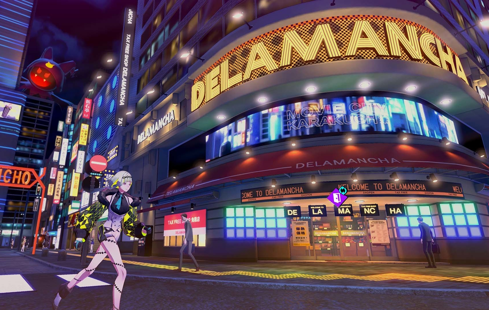

Soul Hackers 2
Game Explanation
This game is a part of another spinoff series known as Devil Summoner. Like with Persona, it does not take place in post-apocalyptic Japan. Soul Hackers 2 was released on all modern plaforms in August 2022. It takes place in a cyberpunk Tokyo, where technological advancement is prestine, but humanity has become complacent with living just to live. They aren't progressing, and almost everyone takes way too much advantage of luxuries- they don't cook, just eat readily made foods. Demons live amongst humanity, but only devil summoners can see them. Behind the scenes of humanity, summoners take jobs to survive- whether they be good or bad jobs. This game focuses on 2 groups of summoners that are at war with each other- one intends to defend Tokyo, the other intends to summon a god that would create a new world.
The collective digital information of humanity gave rise to an artificial intelligence, and this AI predicts the apocalypse is at hand. It creates 2 artificial humans to go and prevent this disaster: Ringo and Figue. Ringo is the main character, and her "sister" is the supporter. (This makes Ringo unique as a Megaten main character. Not only are female main characters rare, not being able to edit their name is even rarer.) They have the ability to "Soul Hack"- they can resurrect someone who just died, but their ability to summon demons becomes dependent on Ringo. This is no spoiler- you meet 3 summoners who die at the start of the game, and Ringo resurrects and recruits them. Two of these summoners turn out to be members of the opposing factions at war, and the third cares not for the war. But despite their differences, they set off to prevent the summoning of this god and to seek vengeance.

Like in Persona, you fight alongside your teammates, but it is always the same 4 party members: Ringo and the 3 summoners. All 4 can equip demons like a Persona main character equips Personas, and everyone's attacks, stats, and weaknesses/resistances are affected by their equipped demon. The turn system works like a SMT game, but no Press Turn system. The special combat gimmick of this game is the Stack (no, not the Magic the Gathering Stack). Every time you strike an enemy's weakness, you gain a number to the Stack, and at the end of your turn you gain a free attack where your demons are sent out and deal additional damage. Dungeon exploration works similarly to SMT V, but a little less dynamic and roaming demons look like generic digital monsters.
You travel to areas by selecting where to go in an overhead map of Tokyo. Some areas are dungeons, and some areas are safe areas of neon-lit Tokyo where you can shop and take side quests. You are also able to invite party members to hang out at a bar to develop their characters. You have a safehouse, and there you can have a meal as a team that will temporarily give bonuses in exploration and combat.
The Good
This game was critically received by the fanbase. I agree that the game has issues, but there are many good aspects of the game. To start, the graphics, cyberpunk asthetic, and soundtrack are pretty cool. (Soundtrack not yet on Spotify.) The battle music is very exciting. The combat is fun as always, and the team members dynamically speak to each other while fighting. You can choose to play with Japanese or English voices, whichever you prefer. (This choice has finally become standard issue for modern Megaten games- both Shin Megami Tensei V and Persona 5 Royal permit you to choose between the 2 languages.) Unlike Shin Megami Tensei V, the human characters are well-written and enjoyable. There's only 5 total teammates, but they are easy to get attached to, and you are able to see them develop as characters. Not only can you hang out with them at the bar, there's this digital place called the Soul Matrix. The Soul Matrix is a cyber dungeon where you can train, find items, and get more insight in the minds of the 3 resurrected summoners, as you are able to view their memories as you explore the Soul Matrix. Also, you are able to interact more with your demons. The demons you are carrying (referred to as the demons in your "stock") can be found around dungeons when not actively in combat, and when you speak to them they'll either heal you, give you items or money, or introduce you to a demon to recruit.
The Bad
Of course, there are issues with this game. To start, the dungeons feel repetitive. Not just the Soul Matrix (which has the same graphical design and aesthetics throughout the whole thing), but the dungeon areas of Tokyo the story forces you to explore also feel like the same thing each time and even share the same background track. Most Megaten games have a variety of dungeon music. The story is more interesting than Shin Megami Tensei V's, but is still basic at best. There's also no demon negotiation- whenever you are introduced to a demon in a dungeon, you simply give them an item they ask for. In terms of difficulty, it has adjustable difficulty, but while playing I found an issue: status problems can make or break a boss fight. If a boss or mini boss is capable of inflicting a status problem, the fight becomes difficult to an unnecessary level. I believe it is because you aren't able to swap party members mid combat like you usually can in a Megaten game. It also has an issue where normal fights are really easy, but you hit a boss fight and BAM the difficulty gap goes insane. (If you've played SMT IV, the first boss fight is a great example of what I am referring to.) Also, the safe city areas where you go shopping at are small, and there isn't much to explore. My final main complaint is the use of DLCs, and how portions of gameplay, extra goodies, and customizables are locked behind an extra paywall- but this is a problem that basically all of ATLUS's modern games have, and honestly a problem with the video game industry as a whole these days.
I do believe that Soul Hackers 2 is a fair game overall. If you want a glamourous turn-based JRPG to play with a group of cool devil summoners, this game will fit the bill. I had a good time playing this game, and if you want to play but don't want to spend so much time grinding in repetitive dungeons, do what I do with games sometimes and put on YouTube videos or Twitch streams while playing though the more dull portions of the game. Plus, if you buy the physical copy of this game, it comes with these 5 holographic cards with the party member on it. A pretty nice surpise.